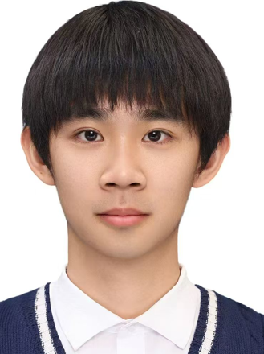

|  |
李锦航 我来自北京工业大学电子信息工程专业，对大语言模型与深度学习领域怀有浓厚热情。我具备良好的自我驱动力 自己探索了Transformer架构及主流神经网络模型（如CNN、RNN等）的核心原理,尝试了用tensorflow深度学习框架来做一些小项目。 此外，我通过了CET4(539分）、CET-6 (527分),能阅读前沿英文文献， 并养成了每日追踪学习最新知识的习惯。我相信，我出色的自我驱动力和对技术的热忱，将支持我在该领域不断探索，并最终做出有价值的成果。 ✉️Email：13260022986@163.com ☎️Number：13260022986 |
教育经历
北京工业大学
2022年9月 - 2026年6月
🚩 加权平均分: 91.26/100, 专业排名第8/60 🚩 相关课程: C语言、机器学习、高等数学、线性代数、概率论 🚩 获奖情况: 校级奖学金, 2023-2024&2022-2023 |
项目经历2025
2024
|
其它经历
学校交响乐团团长
2024年9月 - 2025年10月
Project Assistant
2024年9月- 2024年10月
朝阳区运动会方阵队小队长
2025年3月 - 2025年5月
|
个人技能与爱好语言：普通话，英文(CET4:539,CET6:527)编程：C++&C,Python,Matlab 爱好：篮球，足球，游泳,小号(中央音乐学院9级) |